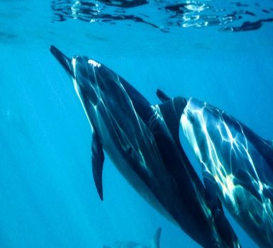
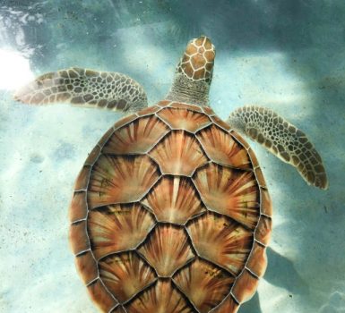
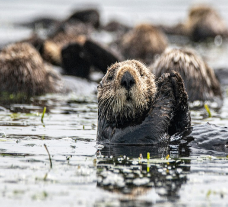

구조 치료 실적
개요
아쿠아플라넷은 해양동물의 조난이나 부상 등의 긴급한 상황에 빠르 게 대응하여 생물을 안전하게 구조할 수 있도록 전담 수의사와 사육사로 구성된 태스크포스팀을 운영하고 있습니다. 이에 따라 아쿠아플라넷이 위치하고 있는 여수와 제주 인근 바다에 좌초되거나 다친 동물들은 전문적인 구조팀의 도움을 받을 수 있게 되었습니다. 바다동물을 지키기 위한 아쿠아플라넷의 활약은 앞으로도 계속됩니다.
-
 돌고래
돌고래
우리나라 연안에도 다양한 고래류가 살고있습니다. 그중 대표적인 좋은 참돌고래와 남방큰돌고래가 있습니다.
-
 바다거북
바다거북
지구상의 모든 바다 거북은 CITES에 의해 멸종 위기종으로 지정되어 보호받고 있습니다. 이렇게 귀히 여겨지는 바다거북의 우리나라 출현 빈도는 점점 높아짐에 따라 좌초되는 숫자도 점점 늘어나고 있습니다.
-
 수달
수달
수달은 강과 습지, 해안의 물 환경의 건강도를 나타내는 지표종으로 우리나라엔 유라시안 수달이 분포하고 있으며 이런 수달은 천연기념물 제 330호이자 멸종 위기 야생 생물 1급으로 지정되었습니다.
구조 실적 상세보기
제주바다에는 남방큰돌고래 100여마리가 무리지어 제주 연안을 이동하며 살고 있습니다. 1박 2일에 출연한 이후로 국민의 관심을 한 몸에 받고 있는 돌고래이기도 합니다. 남방큰돌고래는 종종 얕은 바다로 이동을 하는 습성 때문에 의도치 않게 정치망에 걸리거나 부상을 입는 사고가 발생하곤 합니다. 사고를 당한 돌고래는 보통 어민에 의해 발견이 되고 이를 발견한 어민이 해경에 신고하게 되면 전문기관인 아쿠아플라넷의 구조팀이 해경과 함께 출동하여 구조활동을 펼치게 됩니다.